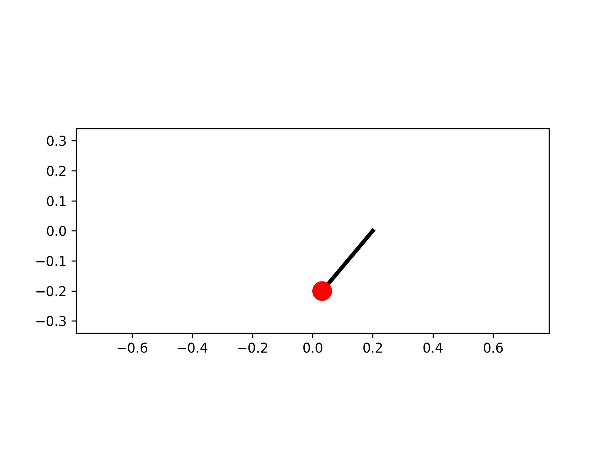
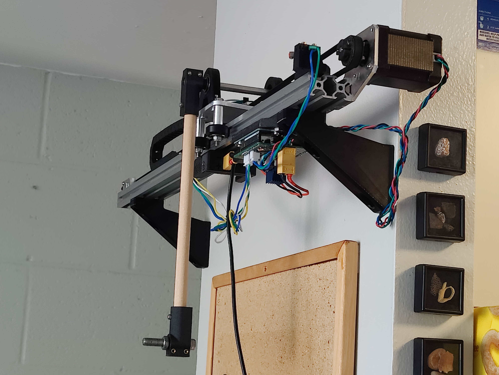

Inverted Pendulum
Intro

For this project, I set out to build a cart that could balance an inverted pendulum, a classic problem in control theory. The project consisted of two parts: first, I used Python to model the dynamics of the system, second, I built a hardware implementation to test the control system under real conditions.
Dynamic Model

I formulated a state-space model of the inverted pendulum using Lagrangian mechanics, with cart acceleration as the controllable input. The control scheme had two distinct modes depending on the pendulum's angle. When close to the upright position, balancing mode used a Linear Quadratic Regulator (LQR) to balance the pendulum at specific cart positions. Otherwise, swing-up mode accelerated the cart side-to-side to increase the pendulum's energy until it exceeded the potential energy of the upright position.
Hardware

I built the hardware to test the control theory under real conditions, with the objective to keep the cost low and reuse components from previous projects. I designed the cart motion assembly in FreeCAD, combining laser-cut sheet metal from SendCutSend with 3D-printed parts. The cart rode along a 600 mm length of 2040 v-slot extrusion and was driven by a NEMA 17 stepper motor. I drove the motor with a TMC2209 driver, measured pendulum angle with an AS5600 magnetic encoder, and controlled the entire system with an Arduino UNO.
Troubleshooting
Once the hardware was built, it took about a week to iron out the problems and get the full control scheme working. The magnetic encoder proved to be a major source of issues. The AS5600 communicates via I2C, which is not robust over long distances; my original layout had the long communication wires running right by the motor, leading to erroneous readings. To fix this, I relocated the Arduino between the motor and drag chain so the motor and encoder wires were routed away from each other. Additionally, the AS5600's 14-bit resolution provided imprecise measurements, causing oscillations in the pendulum. The motor was another source of issues. I initially chose the stepper motor because it was the most powerful one I had on hand, but to avoid skipping steps I had to implement careful limits on its maximum speed and acceleration, which constrained how aggressively the control could respond.
Future Improvements
Now that I have the hardware working, I am looking to make it more robust and experiment with new control methods. Currently, the pendulum can swing up without crashing about 50% of the time. It most often fails during the transition between swing-up and balance modes; this could be improved with better LQR tuning or a less aggressive swing-up controller. Hardware upgrades such as a higher-resolution encoder or a high-torque brushless servo motor would allow for more precise control. Additionally, with a faster microcontroller, I could implement model predictive control, enabling efficient control with strict constraints on cart movement and input intensity.